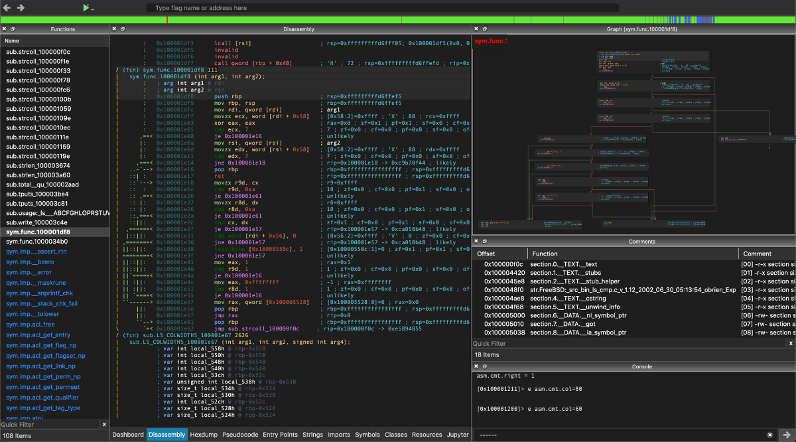

|
|
 Radare2 |
 R2Pipe |
 Cutter |
Cutter is the official UI for radare2 for Linux, macOS and Windows, it's written in C++ and uses the Qt.
For more information please checkout the Official Webpage or the Github project page.
Alternatively you may want to Download the release builds.